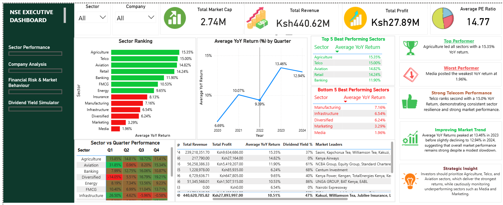
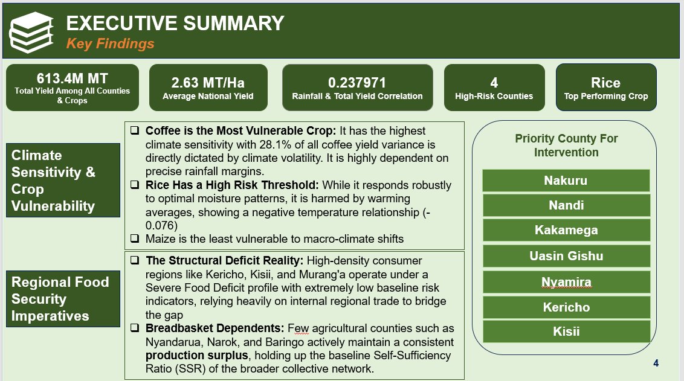
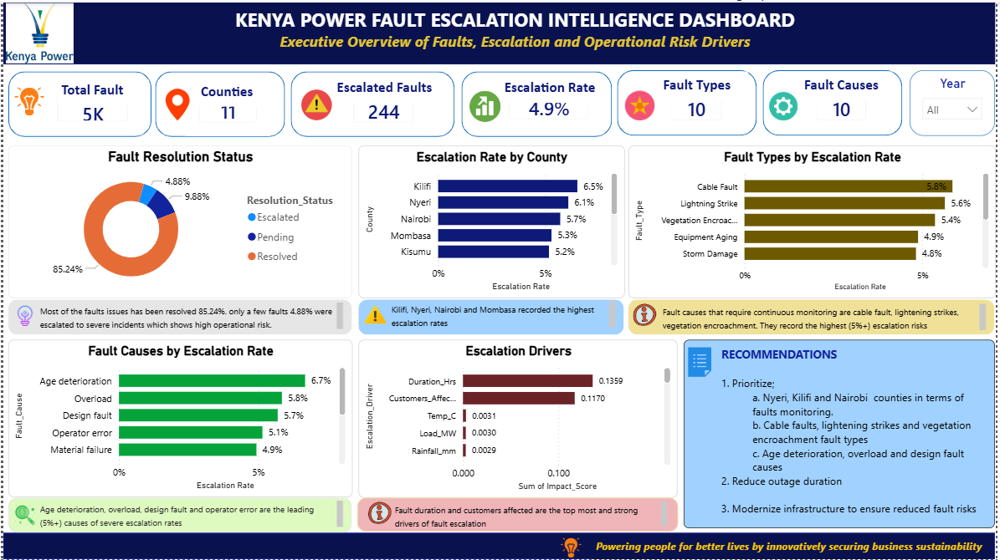
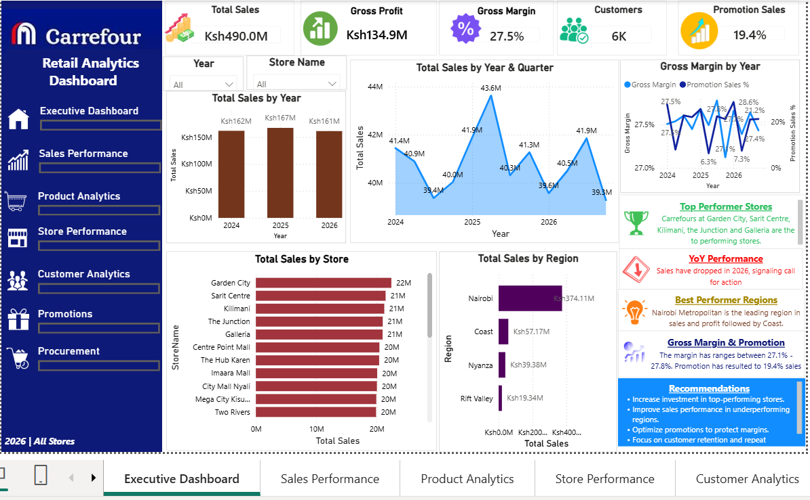
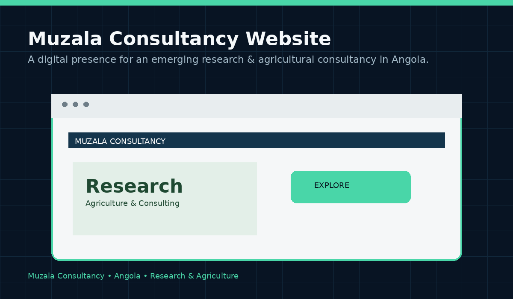
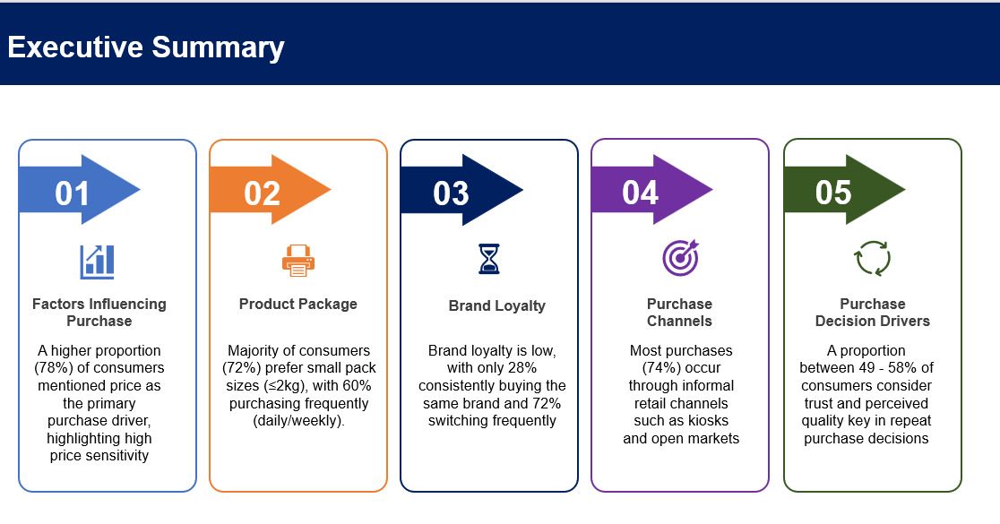
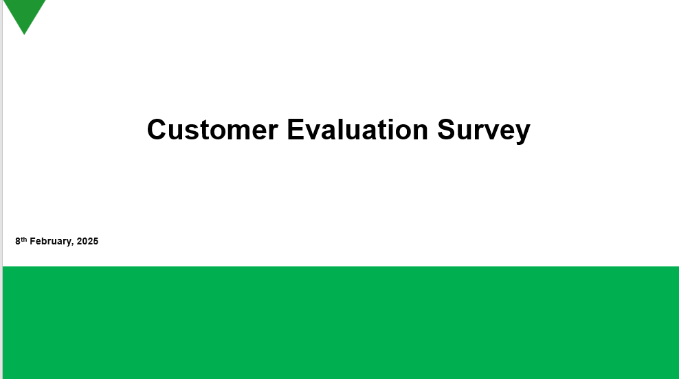
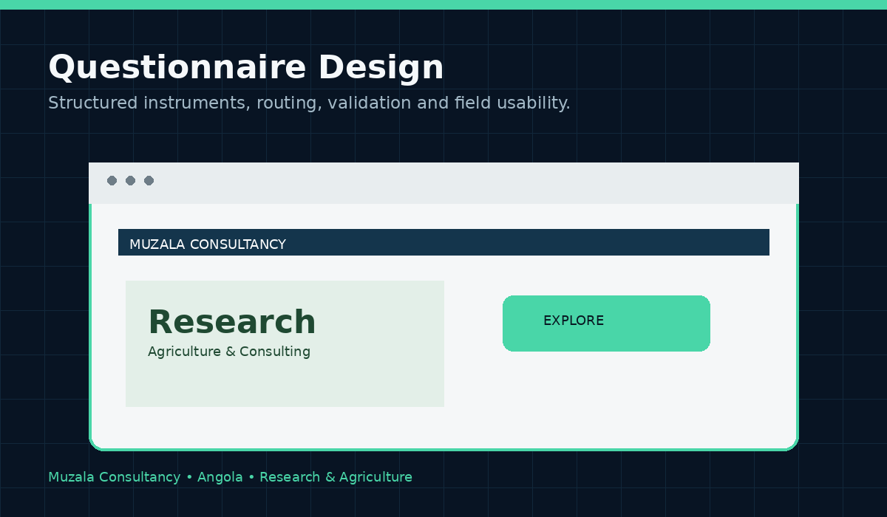
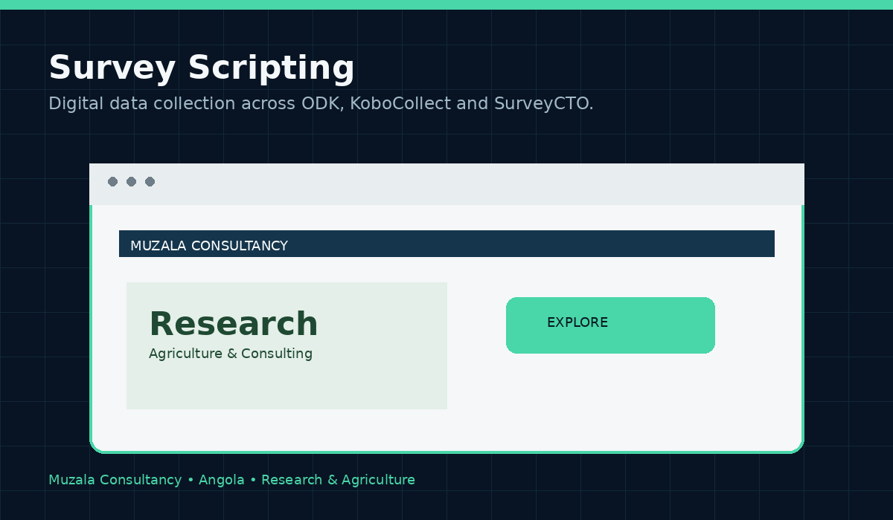
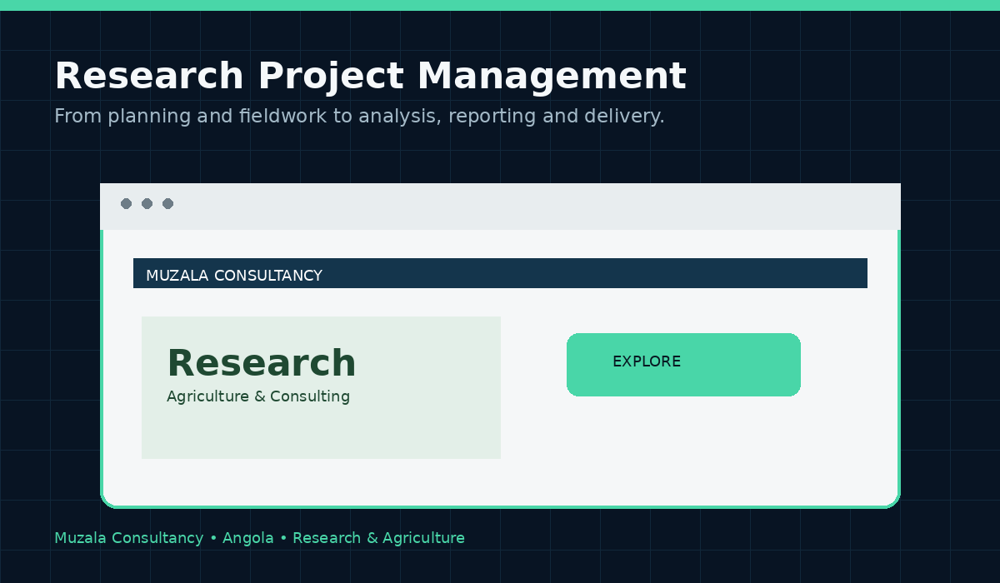

01
NSE Business Intelligence
Power BI business intelligence dashboard using Nairobi Securities Exchange data to analyse market performance, sectors, returns and financial indicators.
View case study →Research • Data Science • Business Intelligence
I combine research, analytics, data science and technology to turn raw data into clear evidence for better decisions.
01 / ABOUT
A Data Scientist and Researcher who is passionate about turning raw data into actionable insights that inform decision making.
My background spans research services, financial services, business intelligence, operations analytics, and data management, where I have worked on transforming raw business data into structured reporting, executive dashboards, and actionable insights. I have worked on more than 20 projects spanning FMCG, financial services, telecommunications, media, health, education, manufacturing, NGO and international development.
I specialize in Research (both qualitative & quantitative), Monitoring, Evaluation & Learning, SPSS, AI Automation, Power BI, SQL, Python, Excel and data warehousing, with experience supporting lending operations, sales performance analysis, monitoring and evaluation, project management, fieldwork management, data analytics, collections analytics, and operational reporting.
Over the past few years, I have worked across fast-paced environments where data accuracy, reporting speed, and business visibility directly impact performance. I have led multiple national projects across all 47 counties in Kenya, managed several multicountry projects, supported reporting initiatives, improved data governance processes, reduced manual reporting workloads, and developed analytics solutions used for operational and strategic decision-making.
My technical toolkit includes Python, SPSS, STATA, R, SQL, Power BI, Excel and a range of digital data-collection platforms. I am particularly interested in practical analytics models and dashboards that help organisations understand what is happening, why it is happening and what to do next.
02 / SELECTED WORK
Selected analytics, research, automation, reporting and digital projects.

Power BI business intelligence dashboard using Nairobi Securities Exchange data to analyse market performance, sectors, returns and financial indicators.
View case study →
Python-based agriculture analytics combining Random Forest modelling, forecasting and food-security analysis using Kenyan data.
View case study →
Operational risk model predicting fault escalation using Random Forest, SHAP explainability and Power BI reporting.
View case study →
Retail performance dashboard covering sales, margins, stores, regions, customers and promotions.
View case study →
Automated application workflow that analyses submissions, responds to applicants and alerts employees when candidates meet qualification criteria.
View case study →
Corporate website built for an emerging research and agricultural consulting company in Angola, designed around credibility, services and client engagement.
View case study →
End-to-end consumer research analysis using SPSS, Python and STATA, translated into a client-ready PowerPoint report and dissemination.
View case study →
Structured estimation model designed to translate population and programme assumptions into practical beneficiary projections.
View case study →
Research proposals, client presentations and findings decks that translate technical evidence into concise business narratives.
View case study →
Qualitative and quantitative questionnaire design with structured logic, skip patterns, quality checks and field-ready instruments.
View case study →
Survey programming and digital data-collection workflows across ODK, KoboCollect, SurveyCTO, SurveyMonkey and SurveyToGo.
View case study →
End-to-end coordination of research projects, field teams, quality assurance, client engagement, analysis, reporting and dissemination.
View case study →03 / TOOLKIT
04 / EXPERIENCE
TIFA Research Ltd — Nairobi, Kenya
Strategic consultancy, project planning and management, client and stakeholder liaison, fieldwork quality assurance, research design, data collection monitoring, analysis using STATA/SPSS/Python/R/SQL/NVivo, and reporting and dashboard development using Power BI and Excel.
Multi-sector research engagements
Worked across FMCG, financial services, telecommunications, media, health, education, manufacturing and international development, supporting quantitative and mixed-method studies, consumer research, monitoring and evaluation, and strategic reporting.
Independent projects & applied analytics
Building practical systems that connect research, analytics, dashboards, machine learning and automation — with a focus on reducing manual workloads and improving operational visibility.
05 / CONTACT
For research, analytics, dashboards, data science, automation or project support, get in touch.